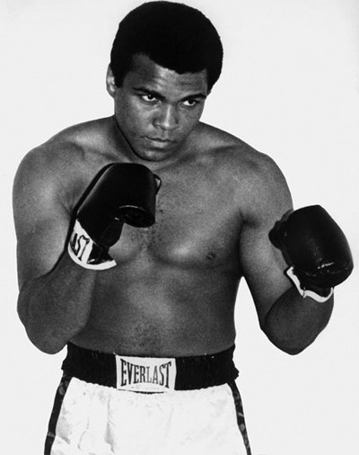

A küzdősportok egyik legnépszerűbb ágazata az ökölvívás, azon belül is a hivatásos, vagy más néven professzionális ökölvívás. A sportág az évek során számos változáson ment keresztül, rengeteget módosult, de alapjaiban mindenképp megmaradt, hisz több ezer éves múltra nyúlik vissza az, amit mi ökölvívásnak hívunk. A boksz alapszabálya, ahogy az a nevéből is ered, hogy ököllel próbáljuk megütni ellenfelünket. Az ilyen jellegű küzdősportot körülbelül 6000 évvel ezelőtt találhatták ki a mai Etiópia területén élő, számunkra ismeretlen népek. Ez a sport eljutott az ősi egyiptomiak területére is, sőt igazából Európának egész mediterrán részét bekebelezte. Az ősi krétaiaknak is volt egy ökölvíváshoz hasonló sportáguk, amely Kr.e 1500 körül alakulhatott ki, viszont teljesen független volt az egyiptomiakétól. Habár az ökölvívás csak Kr.e 688-tól került bele az ősi Olimpiai játékokba, a görögöknél ekkor már elég komoly elismertséget nyert a sportág. Egyik formája abból állt, hogy két ókori görög harcos egy-egy sziklakövön egymást addig ütik, míg valamelyik ki nem üti a másikat. Ennek ellenére a boksz egyáltalán nem volt brutális sportág az Ókorban, viszont nem voltak szünetek a mérkőzések alatt. A felek bőr szíjat viseltek, eredetileg azért, hogy védjék vele kezüket és csuklójukat. Idővel egyre keményebb bőrt használtak, így a szíj szépen lassan fegyverré nőtte ki magát. A rómaiak vas illetve bronz díszgombokat is hordtak, amely olykor halált is okozhatott az ellenfélnek. A boksz a Római Birodalomban nem volt annyira népszerű sportág, mint a gladiátorok véres küzdelmei, amiket a rabszolgák vívtak egymással. A rómaiak Kr.e 30 tájékán feltalálták az ökölvívó ringet, amely máig meghatározó kelléke mind a profi, mind az amatőr ökölvívásnak. Ez egyébként kezdetben kör alakú volt. A kereszténység bejövetelével az ökölvívás minden formája teljesen megszűnt Európában. Közel 1700 év kellett ahhoz, hogy a sportág ismét visszatérjen kontinensünkre. Egy londoni újság utalt először egy bokszmérkőzésre 1681-ben, és a Royal Theatre nevezetű színház adta 1698-ban a mérkőzések helyszínét.
A Broughton által létrehozott szabályok egész Angliában érvényesek voltak, csupán kisebb módosítások voltak 1838-ig, amikor a Pugilistic Society (1814-ben alapították) kifejlesztette a London Prize Ring Rules-t, amely módosította a szabályokat. A ring oldalai a 3 lábnyi hosszúságról 24 lábra módosult, melyet 2 kötél vett körül. A leütés a menet végét jelentette, és a 30 másodperces szünetet követően 8 másodpercet biztosították a padlózó versenyzőnek, hogy önerejéből a ringbe tudjon lépni.
1866-ban Queensberry Márkija kezdte el igazából az új szabályok támogatását. Ezek a szabályok korlátozták a menetszámokat, a birkózás és más sportágakban használatos módszereket betiltották, illetve kötelezővé tették a bokszkesztyű használatát. A szabálymódosítások bevezetése azonban nem történt meg rögtön. Az új korszak kezdte 1892-höz, és James J. Corbett nevéhez fűződik, aki akkor már az új szabályok szerint lépett a ringbe, és legyőzte a kesztyűt nem viselő, a régi korszak egyik legnagyobb, és egyben utolsó bajnokát, John L. Sullivant. A népszerűség növekedésével, ami elsősorban az Egyesült Államokban mutatkozott meg, súlycsoportokra osztották fel a sportágat, azonban ahogy ez máig is érvényben van, a nehézsúlynak nem szabtak felső súlyhatárt. 8 divízióba osztották fel az ökölvívást: légsúly: 50,8kg, harmatsúly: 53,5kg, pehelysúly:57,2kg, könnyűsúly: 61,2kg, váltósúly: 66,7kg, középsúly 79,4kg, félnehézsúly: 91,kg és nehézsúly, amelynek - mint már mondtuk - természetesen nem volt felső súlyhatára. A súlycsoportok mára kibővültek néhány újabbal, hiszen rengeteg súlycsoport közé beékelődött egy-egy újabb, mint pl: kispehelysúly (nagyharmatsúly), kiskönnyűsúly (nagypehelysúly), kisváltósúly (nagykönnyűsúly), nagyváltósúly (kisközépsúly), nagyközépsúly illetve a cirkálósúly, hogy csak a gyakoribb kategóriákat említsük. A legtöbb kategória közé beépült egy-egy ilyen, amelynek nevét vagy a felette levő kategória nevéből, vagy pedig az alatta levéből fejezzük ki: pehelysúly, nagypehelysúly (kiskönnyűsúly), könnyűsúly. Ezenkívül a nehézsúly és a félnehézsúly közé beékelődött a cirkálósúly, amely elsősorban olyan ökölvívók számára jött létre, akik gyakran "cirkáltak" e két kategória között. A sportág rengeteg mindenen ment keresztül, és több esetben is komoly esély volt rá, hogy esetleg eltörlik a törvényes sportágak közül annak veszélyessége miatt. Ennek egyik fő indíttatója egy dél- koreai öklöző, név szerint Duk Koo Kim halála volt. Elsősorban az "American Medical Association" tiltakozott a sportág ellen, és azonnali betiltását követelte. A sportágat nem tiltották be ideiglenesen sem, de néhány változtatást mindenképp bevezettek a sportolók egészsége érdekében. Jobb, és elővigyázatosabb orvosi ellátásokat vezettek be a ring sarkában. Sokan érdeklődnek afelől, hogy mit is jelent a profi bokszolóknál világbajnoknak lenni. A sportágban 4 jelentős világbajnoki szervezet van, a WBC, a WBA, az IBF és a WBO. Európában talán az utóbbi a legismertebb, de Amerikában az előbbi 3 jóval nagyobb ranggal bír. Globálisan tehát ezen címek világbajnokait nevezhetjük "igazi" világbajnokoknak. Magyar kiválóságunk, Erdei Zsolt is ennek a szervezetnek (WBO) a félnehézsúlyú világbajnoka, és Kovács István is szintén ennek a szervezetnek volt a pehelysúlyú világbajnoka. Természetesen ezeknek vannak interkontinentális (nemzetközi) öveik is, melyek szintén ezekhez a szervezetekhez tartoznak, kisebb jelentőséggel bírnak, de mégis komoly szerepet vállalnak egy pályafutás kezdetleges vagy még fejlődésben lévő szakaszában. Emellett egyre több kisebb, de egyben hatalmas léptekkel fejlődő szervezet jelent meg a bokszvilágban, melyek közül az IBO és a WBU címek a legjelentősebbek. Ezek ugyan nem nevezhetők "valódi" világbajnoki öveknek, de a címek kvalitását jelzi, hogy számos jó ökölvívónak az életében játszott már fontos szerepet ezen címek egyike. Pl. a vitathatatlan címért (a WBC, WBA, IBF öveket együttesen birtokló, vagy azoktól nem vereség miatt megváló személy legyőzése) júniusban mérkőző Ricky Hatton is hosszú ideje a WBU bajnoka, míg hazánk büszkesége, Kótai Mihály a WBF koronájának nagyváltósúlyú bajnoka.
|  |